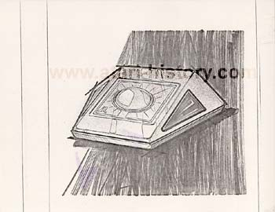

Atari Trakball Concepts
All of us generally are familiar
with the standard Atari CX-80 and CX-22 Trakball controllers which can
be used on any Atari 2600, 7800 and Atari home computer system with a compatible
DB-9 controller port. The Atari Trakball is a very well
designed and is ergonomically shapped to sit as well on a tabletop or in
a persons laptop for easy use. However most people never get
the opportunity to look at the concept drawings and artwork of an Atari
product as it is being conceived and planned. Below are 15
various concept designs of the Atari trakball up to it's final design.

This Star Trek'ish shuttlecraft looking controller has fire buttons
on either side
This design has its fire button down low and square which is not a sound
design for ease of use and longterm use. Nyko currently
has a similar
looking trakball controller for the Sony Playstation, perhaps their
next
version will be a little more ergonomic.

This is a progressively more ergonomic design from mid September 1982.